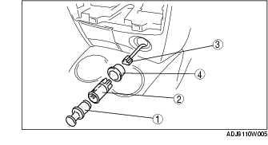
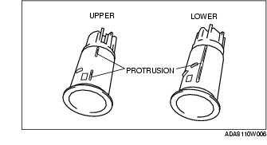

Cigarette lighter removal/installation
1. Disconnect the negative battery cable.
2. Remove the center panel module. (See CENTER PANEL MODULE REMOVAL/INSTALLATION.)
3. Remove the climate control unit.
4. Remove in the order indicated in the table.

|
1
|
Cigarette lighter plug
|
|
2
|
Socket
(See Socket Removal Note)
(See Socket Installation Note)
|
|
3
|
Connector
|
|
4
|
Ring
(See Ring Removal Note)
|
5. Install in the reverse order of removal.
Socket Removal Note
1. Put your hands inside the dashboard where the climate control unit was removed, and push the socket outward while pressing the ring protrusion using a tape-wrapped flathead screwdriver through the socket hole shown in the figure.

2. Push the socket outward by pressing the other ring protrusion using a tape-wrapped flathead screwdriver while the ring protrusion is released.

Ring Removal Note
1. Put your hands inside the dashboard where the climate control unit was removed and pull the ring outward while pressing the tabs.

Socket Installation Note
1. Install with the socket protrusion shown in the figure upward.
